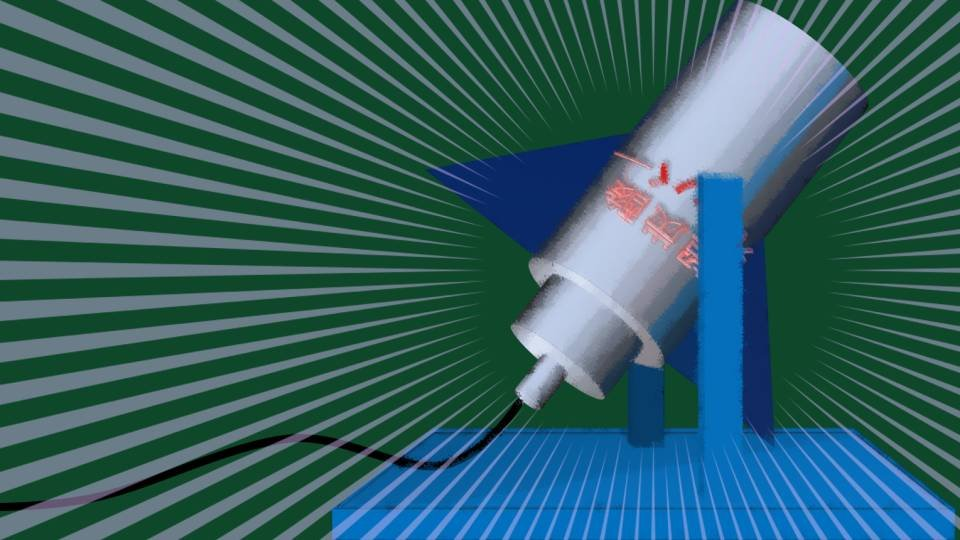
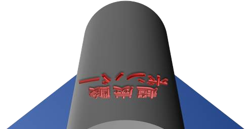
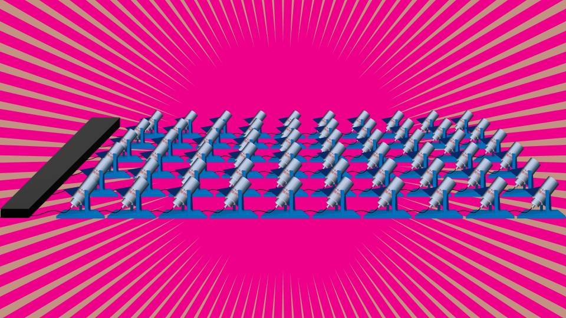
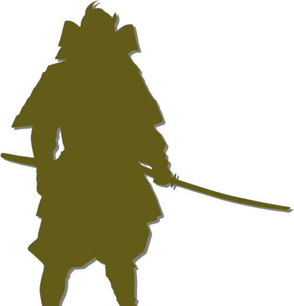
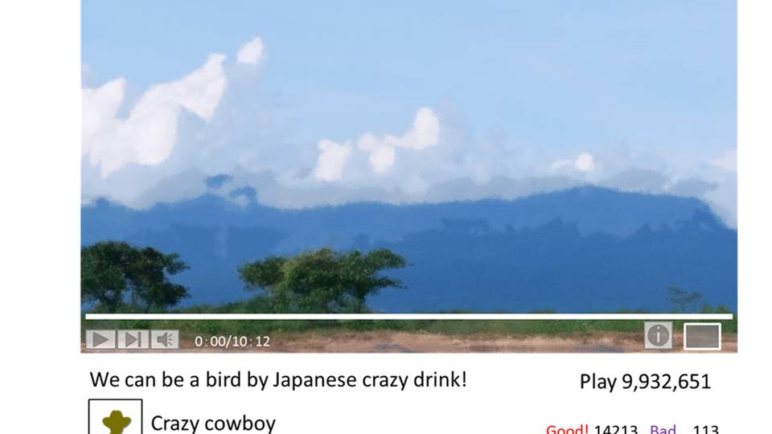

Script 0000181F


ようクソ野郎ども！ ついに人間がコンビニのドリンクで空を飛ぶ日がやってきたぜ！
ここにあるのは先日、日本で発売された超炭酸ボンバーだ！
ボトル缶だけで重さ1キログラムだ！
ボトル缶だけで重さ1キログラムだ！
さて、まずは1本でどこまで飛ぶか試すぜ！
方法はペットボトルロケットと同じ！ ただし、空気は補充せずにボトルを振るだけだ。
これをペットボトルロケットの台に設置して、このスイッチを押せば自動的に蓋が開く。

こいつがペットボトルロケット風にアレンジした超炭酸ボンバー1号だ！
さあ、まずはこいつで威力を実験だ！
さあ、まずはこいつで威力を実験だ！

さあ、どれだけ飛ぶかな？
カウントダウン行くぜ！
３、 ２、 １、 発砲！
カウントダウン行くぜ！
３、 ２、 １、 発砲！
すごいぞ！ 幅300フィートの河を簡単に飛び越えた！
重さ1.5kgの物体を300フィート飛ばすなんて並みの威力じゃない！
これなら…… 俺の夢がかなうかもしれない！
重さ1.5kgの物体を300フィート飛ばすなんて並みの威力じゃない！
これなら…… 俺の夢がかなうかもしれない！
俺の体重は60キロ。
俺が超炭酸ボンバーを60個つけてたらどうなるんだ？
やるしかない！
俺が超炭酸ボンバーを60個つけてたらどうなるんだ？
やるしかない！

こいつがクレイジーカウボーイ仕様のクレイジーロケットだ！
この上にボードをかぶせて俺が乗る。
そして一気にふたを開けたらどうなるんだろうな！
この上にボードをかぶせて俺が乗る。
そして一気にふたを開けたらどうなるんだろうな！

今回のプロテクターは、日本産の超炭酸ボンバーということで、俺もサムライスタイルにしてみたぜ！
計算上、このプロテクターの重さでも充分な威力を保てるはずだ！
さらに州警察にも協力してもらい、河には救命部隊も配置した！
あとは…… あとは俺の心の準備ができればOKだ……。
計算上、このプロテクターの重さでも充分な威力を保てるはずだ！
さらに州警察にも協力してもらい、河には救命部隊も配置した！
あとは…… あとは俺の心の準備ができればOKだ……。
さあ、ついに人間がコンビニのドリンクで鳥になる瞬間だ！
ちょっと待ってくれ……。
少し深呼吸させてくれ。
昨夜この瞬間のことを想像して全然眠れなかったんだ。
ワクワクはしてるけど、内心、本当に怖いんだ……。
ちょっと待ってくれ……。
少し深呼吸させてくれ。
昨夜この瞬間のことを想像して全然眠れなかったんだ。
ワクワクはしてるけど、内心、本当に怖いんだ……。
さあ……行くぜ……。
3、
2、
1……。
ああ、ちょっと待ってくれ！ もう1回深呼吸させてくれ！
すまない、もう覚悟は決めたぜ。
すまない、もう覚悟は決めたぜ。
さあ、鳥になるぜ！ 空へはばたくぜ！ 世界で最初に空を飛ぶサムライに、俺はなる！
３、
２、
１、
ゴー！
おおい！ 早く助けてくれ！
プロテクターが重くて沈んでしまう……！
プロテクターが重くて沈んでしまう……！
はあ……はあ……何とか生きて帰って来れたぜ。
みんな、本当にすまない。爆発の勢いでカメラが倒れてしまっていたようだ。
結果から報告すると、やっぱり300フィートそのままってわけにはいかなかったが、200フィートは飛んだはずだ。
みんな、本当にすまない。爆発の勢いでカメラが倒れてしまっていたようだ。
結果から報告すると、やっぱり300フィートそのままってわけにはいかなかったが、200フィートは飛んだはずだ。
もしあの勢いで向こう岸まで行っていたら、俺は木っ端微塵だっただろう。
200フィートしか飛ばなかったのはとても運が良かった。
日本で超炭酸ボンバーが法律で規制されるのも時間の問題だろう。
200フィートしか飛ばなかったのはとても運が良かった。
日本で超炭酸ボンバーが法律で規制されるのも時間の問題だろう。
そうなる前に、心ある者よ！ ぜひ俺の後を継いで宇宙へ飛び立ってくれ！
人間が鳥になる日は近いぞ！
人間が鳥になる日は近いぞ！

「このおっさん、無茶苦茶すぎだろ……」